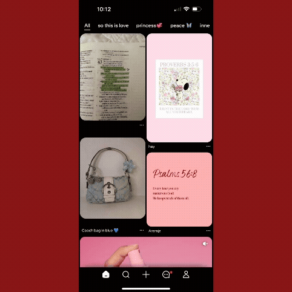
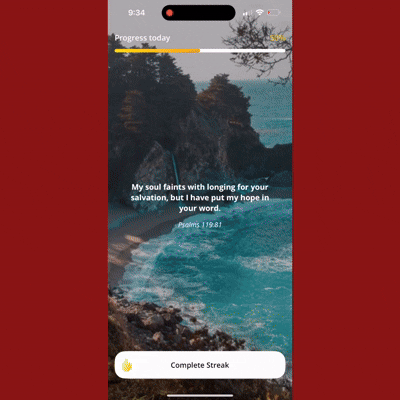
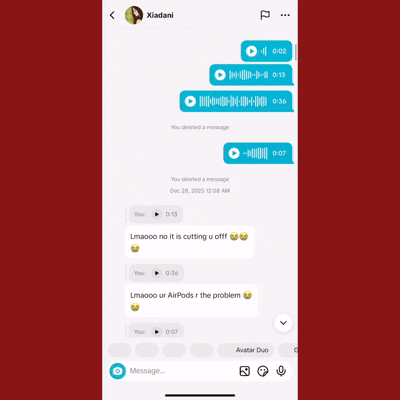
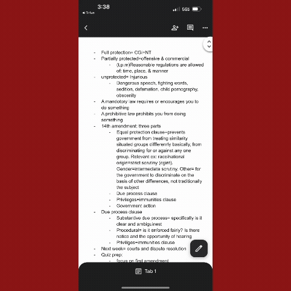
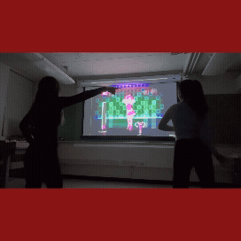
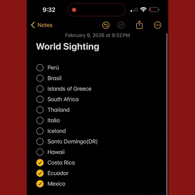
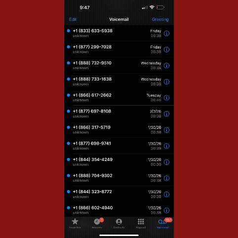

During the weekdays I start my day by never listening to my alarm and being rushed to not miss the ferry haha. I do wish I had more time to sleep, however, it is really beautiful seeing the sun come up! The view is amazing no matter how many mornings I see this.

While I am commuting to usf I do a quick glance through my pinterest home page. I usually don't spend a lot of time on here but I do enjoy updating my folders with new insporation and pictures. Let's be friends! My acount: emyjimee

I then hover to Bible chat! There’s this feature where the app gives you a new scripture verse every hour as well as an interpretation of a verse alongside with a prayer which is really nice! Having your own prayers with God is insanely special. Additionally, having apps that can help with your prayer journey is always a bonus.

I then remembered that I am still trying to figure out how to make a delicious fruit smoothie. I have no idea why I can not make a good or AT least a decent smoothie. I underestimated the process behind it. I am honestly sad I have gone this long without knowing how to make my smoothie drinkable. At first I looked fruit smoothies recipes on tiktok but then changed to pinterest

Speaking of tiktok, my cousin sends me videos everyday. I need to get better in sending videos back but my cousin is the real one when using this app LOL.

Welcome to Xia’s (my cousin) and I’s world. Our world is pretty cool and still under construction. Minecraft has been the video game I have remained loyal to and played the most. I have the most fun when I play with my cousin of course. What I enjoy most when playing minecraft is really the craft of it and building my dream farms.

The social media I use the most is instagram. I only have Instagram and Tikok as social media platforms. I have been really enjoying the reels and the new repost feature on IG. I don't spend much here because after a while it can become unhealthy to me. It's easy to get carried away and easy to get lost in it.

Study, study, study! I am currently taking business law and I have no idea what is going on. I find myself having a hard time understanding but it will be alright. I am blessed that I have friends that love to help so huge shout out to them!

One of my hobbies is dance. I enjoy going to Just dance 4 on youtube! It’s so fun and nostalgic to me. I played this game as a kid and never outgrew from it.

I glance back between my notes. I recently have started a list of places I hope to get a chance to see. I enjoy new adventures and life lessons behind traveling. I think of it as breaking out of your circle and exposing/immersing yourself to new connections and memories with people all around the world and seeing how uniquely colorful they make a place be. I learned that a home isn't a house but the places you dig a deep connection with. Additionally, I reflected on the parable teaching of Christ about the fig tree. At first I had trouble understanding it but then God provided clarity after trying to see the meaning behind it! Lastly, I studied the notes of the task I need to do for my event planning internship.

As part of my daily routine, unfortunatly, I recive multiple spam calls. I don't know what the heck is going on. At this point spam calls call me more than my family LOL. Like what is this nonsense? Please stop the spam!

The ending of my day, when preparing to go to sleep I find it really comforting listening to this calming worship playlist at night. It doesn’t matter my emotion/mood this playlist brings peace listening as i say goodbyes to my nights.